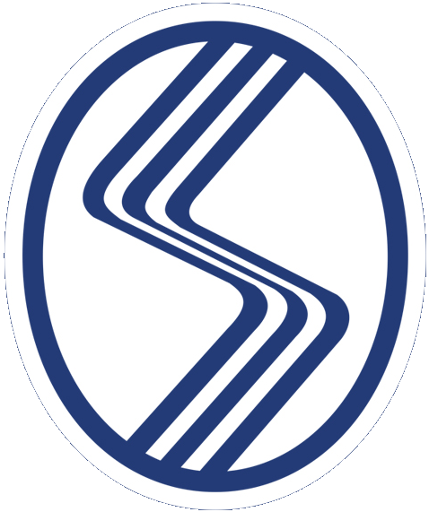
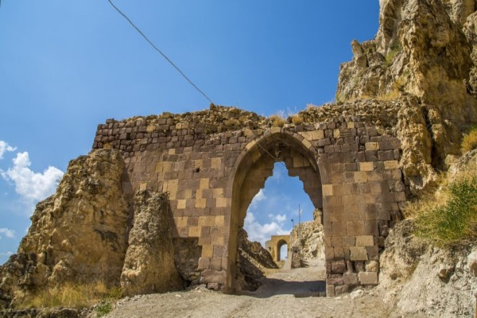

HAKKINDA
ÖZGEÇMİŞ
ŞEHRİM
TAKIMIMIZ
İLETİŞİM
LOGIN

Erzincan Kalesi
Anadolu'nun en eski ve tabii kalelerinden
biri olan Kemah Kalesinin kuruluşu,
Hitit-Urartu dönemine kadar uzanmaktadır.
Sarp kayalar üzerinde kurulu olan Kalenin,
iç içe iki yapısı olup, çevresi surlarla çevrilidir.